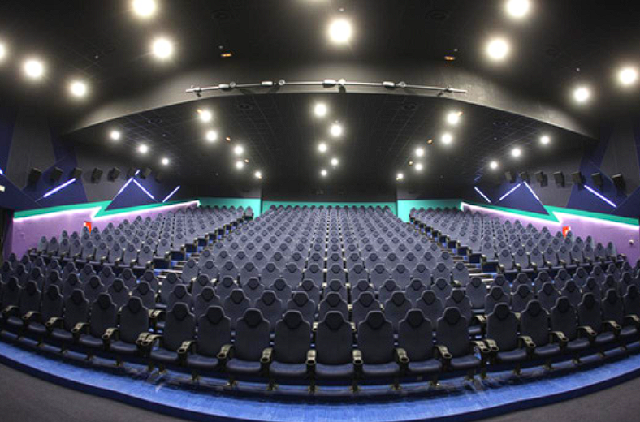

O nama
- Arena Cineplex je kompletno renovirana 2010. godine u skladu sa najnovijim svetskim standardima. Rekonstrukcijom i adaptacijom starog bioskopskog prostora dobijen je prvi multipleks u Vojvodini sa šest vrhunski opremljenih sala, ukupnog kapaciteta od skoro 1.000 mesta. Sale su opremljene vrhunskom digitalnom tehnikom za 2D i 3D projekcije.
- Pored redovnog filmskog repertoara, u Areni Cineplex se organizuju svečane premijere domaćih filmova, kao i festivali FEST, Cinema City, Cinemania i Kids Fest. Važan segment naše ponude čine i mogućnost kupovine koncesija (kokice, naćosi i razna bezalkoholna pića) koje publika može da konzumira tokom trajanja projekcije.
